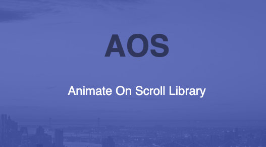

Como hacer animacion on scroll en web con la libreria AOS
Hoy en dia un elemento que le da dinamismo a un sitio web, le mejora el UX y la hace mas moderna es el uso de animaciones
Una de las formas mas simples y efectivas de añadir estas animaciones a un sitio web, sin tener que hacer uso de ningún CMS o tener que escribir demasiado código, es el uso de la librería AOS https://michalsnik.github.io/aos/
Esta libreria se trata de un proyecto de github en el que te indica como añadir animaciones a tu proyecto mediante el uso de ciertas clases que tienes que añadir en los div o partes que quieres animar
Simplemente accedes a su sitio web, sigues las instrucciones de uso que consisten en añadir un par de lineas de codigo a tu sitio para enlazarlo con la libreria y a continuación usar sus clases para animar
Es algo muy simple y con unas posibilidades y potencial enorme para su uso en proyectos y diseño de interfaces